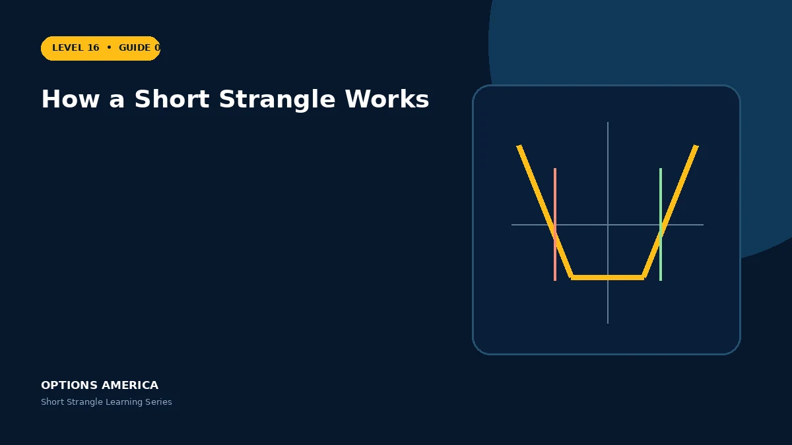

Understand how two OTM short options collect premium, change delta and create assignment and margin obligations.
Two separate strikes
The put is sold below spot and the call above spot. Both can expire worthless, but either option can gain value before expiration through price movement, time value or volatility.
Tested and untested sides
A rally tests the call and usually reduces the put's value. A decline tests the put and reduces the call's value. The profitable leg does not cap the losing leg.
Changing delta
Initial deltas may partly offset, but negative gamma makes the position shorter delta into a rally and longer delta into a decline. Neutrality must be monitored, not assumed.
Assignment
An assigned put creates long shares; an assigned call can create short shares. Dividends, borrow conditions and remaining extrinsic value affect early-assignment decisions.
A practical example
A 90 put and 110 call are sold while stock is $100. A rally to $108 makes the call the tested side even though it may still be OTM and raises directional risk.
This simplified scenario focuses on selected outcomes; live prices and risks will differ. Live option prices also reflect the underlying price, time decay, rates, dividends, liquidity and transaction costs. Greeks are theoretical estimates, not guarantees.
Build a risk-first trading plan
Before using how a short strangle works, record the stock price, put and call strikes, expiration, total credit and contract multiplier. Calculate both breakevens, then estimate dollar loss beyond them under upside and downside gaps. A wide strike range improves the starting room but does not define either tail.
Stress several prices, time points and volatility levels, including a skew change that affects the put and call differently. Review delta, gamma, theta, vega and buying power for the complete portfolio. Multiple OTM positions can become tested together during a common market shock.
Define a profit target, maximum tolerated loss, tested-side trigger, margin reserve and latest exit date before entry. Decide whether an event is intentionally included and how assignment would be handled. Use multi-leg orders and confirm quantities after every fill, roll or partial close.
Document the result after exit, including slippage, assignment effects and the largest intraday exposure. Comparing the original forecast with the actual path helps distinguish a sound process from a lucky outcome and improves later strike, duration, margin-reserve and position-size choices under similar market conditions.
Frequently asked questions
Can an OTM option lose money?
Yes, its price can rise before expiration.
Does one winning leg cap the other?
No.
Can assignment occur early?
Yes.
Continue the Short Strangle cluster
Explore related guides: Short Strangle Profit, Loss and Breakevens · Short Strangle vs Covered Strangle · Short Strangle Expiration and DTE Selection. For a structured sequence, use the free Level 16 – Short Strangle course.
Options involve risk and are not suitable for every investor. This material is educational and is not investment, tax or legal advice. Greeks are theoretical estimates, and contract terms and broker requirements can vary.